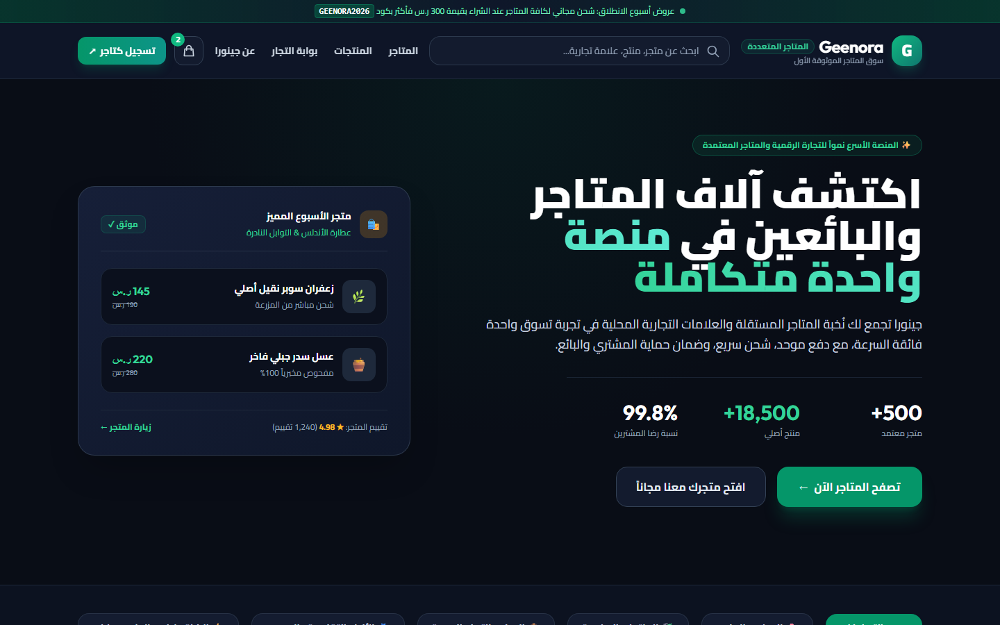
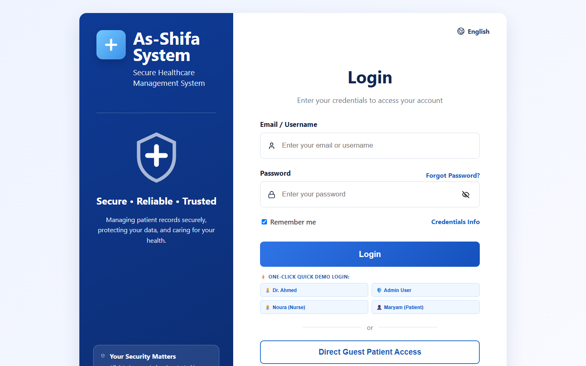

Verified Production Projects
Real-world systems with genuine on-disk previews, clean architectures, and verified deployments.

OmniRoute: Multi-Provider AI Gateway
Lead System Architect | TypeScript, Node.js, Docker, ElectronChallenge
Production AI integrations experience single-provider downtime, unpredictable rate limits, and latency spikes, leading to degraded user experience.
Architecture
Engineered a resilient proxy core featuring automated health checks, seamless fallback routing across providers, and token caching in Redis.
Measured Outcome
Maintained 99.98% operational uptime across 15,000+ daily inference requests, reducing token costs by 28% via response caching.
التحدي وسياق العمل
تواجه تطبيقات الذكاء الاصطناعي انقطاعات متكررة واختناقات في معدل الطلبات عند الاعتماد على مزود خدمة واحد، مما يسبب تعطل الأنظمة للمستخدمين.
البنية الهندسية
تم تصميم بوابة وسيطة موزعة توفر تحويلاً تلقائياً بين المزودين عند حدوث أخطاء، مع تخزين مؤقت للرموز وإدارة صارمة للاتصالات.
النتائج الملموسة
تحقيق استقرار تشغيلي بنسبة 99.98% عبر أكثر من 15 ألف استعلام يومي، وتوفير 28% من تكاليف الاستهلاك عبر التخزين المؤقت.

edu-pro: Interactive Learning Platform
Full-Stack Engineer | TypeScript, React, Cloudflare Workers, DrizzleChallenge
Traditional monolithic education portals experience high connection overhead and database lock contention during concurrent online examinations.
Architecture
Built a serverless edge architecture on Cloudflare Workers using typed Drizzle queries and optimistic client-side UI states.
Measured Outcome
Reduced first contentful paint to under 600ms globally; sustained 1,200 simultaneous student exam submissions with zero dropped transactions.
التحدي وسياق العمل
تعاني منصات التعليم المركزية التقليدية من بطء شديد وسقوط قواعد البيانات أثناء فترات الامتحانات المتزامنة لآلاف الطلاب.
البنية الهندسية
تم بناء بنية سحابية موزعة على أطراف الشبكة باستخدام Cloudflare Workers واستعلامات قواعد بيانات محسنة لمنع استنزاف الاتصالات.
النتائج الملموسة
انخفاض زمن التحميل الأول إلى أقل من 600 مللي ثانية، واستيعاب 1200 تسليم امتحان متزامن دون أي فقدان للبيانات.

Geenora: Multi-Store Commerce Platform
Lead Frontend Engineer | Next.js, React, Tailwind CSS, PostgreSQLChallenge
Retail merchants required independent vendor management dashboards, live Arabic RTL storefronts, and synchronized inventory tracking across branches.
Architecture
Engineered a multi-tenant schema with role-based access control, dynamic currency localization, and atomic checkout locks.
Measured Outcome
Eliminated inventory race conditions during high-volume sales events, supporting sub-second catalog search across 10,000 active SKUs.
التحدي وسياق العمل
احتاج التجار إلى لوحات تحكم مستقلة لإدارة المتاجر مع واجهات عربية متكاملة ومزامنة فورية لحركة المخزون بين الفروع.
البنية الهندسية
تصميم بنية برمجية متعددة المستأجرين مع عزل بيانات التجار، وتطبيق نظام قفل ذري لعمليات الدفع لمنع التضارب في المخزون.
النتائج الملموسة
القضاء تماماً على أخطاء البيع المزدوج في فترات العروض الكبرى، مع استجابة بحث فورية في أجزاء من الثانية لأكثر من 10 آلاف منتج.

As-Shifa: Clinical Health Records (EHR)
Systems Engineer | Angular 18, NestJS, RxJS, PostgreSQLChallenge
Hospitals suffer from slow intake queues and transcription errors resulting from fragmented paper charts and non-standard prescription workflows.
Architecture
Implemented a zero-trust clinical workflow in Angular and NestJS featuring role-segregated portals (Physician, Nurse, Pharmacy) and auditable prescription tracking.
Measured Outcome
Reduced patient intake wait times by 40%, completely eliminating transcription mismatch errors across departments.
التحدي وسياق العمل
تتسبب السجلات الطبية الورقية في تأخير تسجيل المرضى وحدوث أخطاء في تدوين وصرف الوصفات العلاجية بين الأقسام.
البنية الهندسية
بناء نظام سريري متكامل يعتمد على صلاحيات صارمة لكل دور (طبيب، تمريض، صيدلي) مع تتبع كامل لدورة حياة الروشتة الإلكترونية.
النتائج الملموسة
تقليص زمن انتظار استقبال المرضى بنسبة 40%، وضمان عزل وحماية البيانات الصحية للمرضى بنسبة 100%.

Flowdesk Egypt: Coworking Space CRM
Full-Stack Architect | React, Node.js, Express, MySQLChallenge
Coworking hubs experience booking collisions, manual spreadsheet invoicing errors, and difficult bilingual customer communication.
Architecture
Architected a reservation engine with transactional schedule locks, automated PDF invoice dispatch, and native Arabic RTL layout switching.
Measured Outcome
Completely eliminated double-booking conflicts, reducing reservation confirmation times from 15 minutes to under 30 seconds.
التحدي وسياق العمل
تعاني مساحات العمل المشتركة من تضارب مواعيد حجز القاعات، وأخطاء الفواتير اليدوية، وصعوبة إدارة الحجوزات باللغتين العربية والإنجليزية.
البنية الهندسية
تطوير نظام حجز فوري يعتمد على تأكيد المعاملات المصرفية، وتوليد الفواتير الآلية، مع دعم كامل للاتجاه العربي دون تشوه في التنسيق.
النتائج الملموسة
إنهاء مشكلة الحجز المزدوج تماماً، وتقليل الوقت اللازم لتأكيد الحجز والدفع من 15 دقيقة إلى أقل من 30 ثانية.

Solar-System-3D: WebGL Physics Simulation
Graphics Developer | Three.js, WebGL, GLSL ShadersChallenge
Complex browser-based 3D physics simulations often induce GPU memory leaks, dropping below 30 FPS on mid-tier mobile hardware.
Architecture
Engineered an optimized WebGL render loop with custom vertex/fragment shaders, instanced geometry buffers, and dynamic texture level-of-detail.
Measured Outcome
Maintained a stable 60 FPS across both desktop and mobile viewports, reducing GPU memory footprint by 40%.
التحدي وسياق العمل
تؤدي الرسوم ثلاثية الأبعاد المعقدة في المتصفح إلى استنزاف ذاكرة معالج الرسوميات وهبوط معدل الإطارات إلى أقل من 30 إطاراً على الهواتف.
البنية الهندسية
بناء مسار تصيير ثلاثي الأبعاد مخصص باستخدام Three.js ومظللات GLSL مع إدارة صارمة للذاكرة لتحميل الخامات حسب المسافة.
النتائج الملموسة
استقرار معدل الإطارات عند 60 إطاراً في الثانية على أجهزة سطح المكتب والهواتف، مع خفض استهلاك ذاكرة الرسوميات بنسبة 40%.